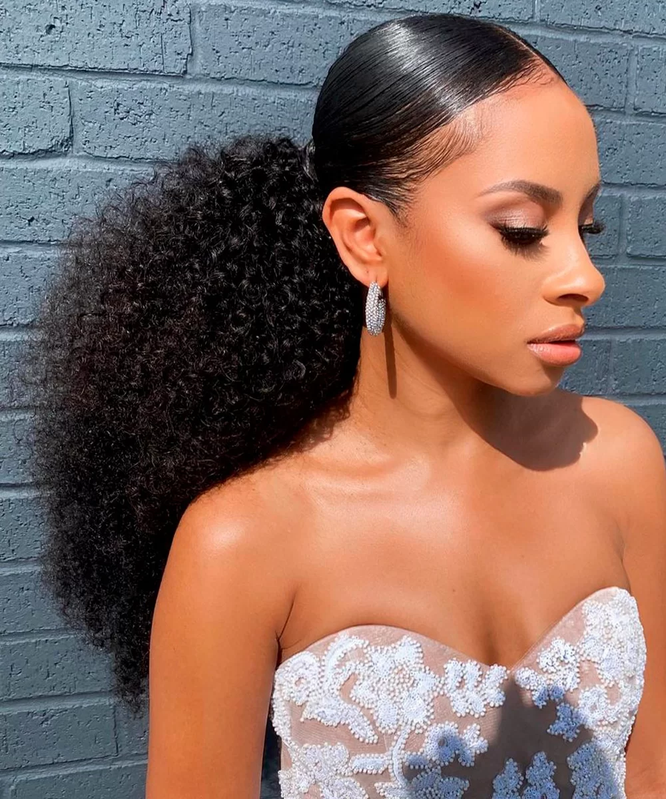
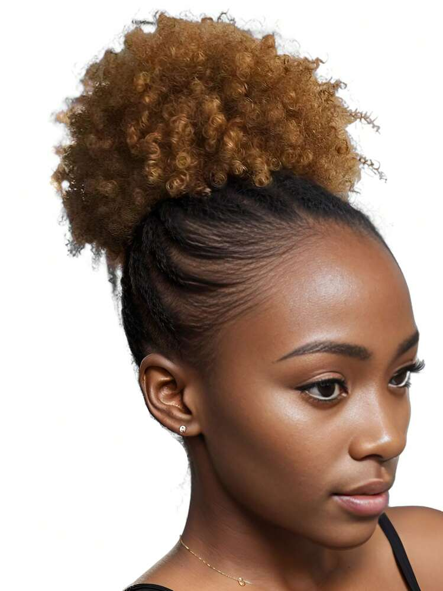
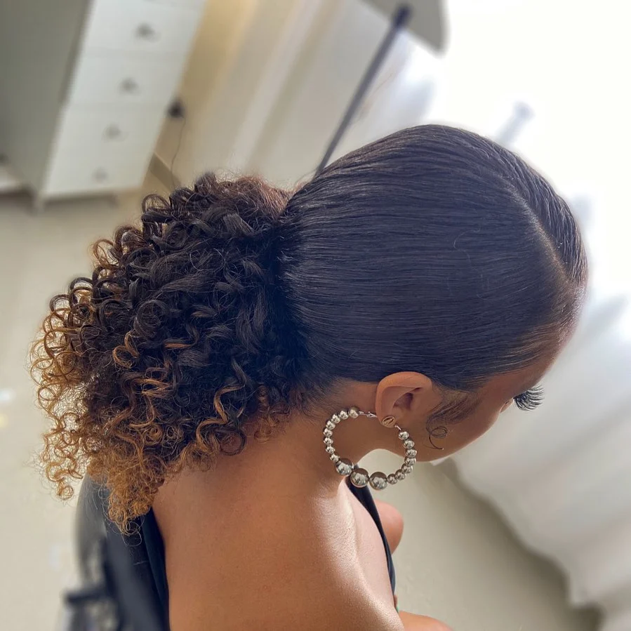
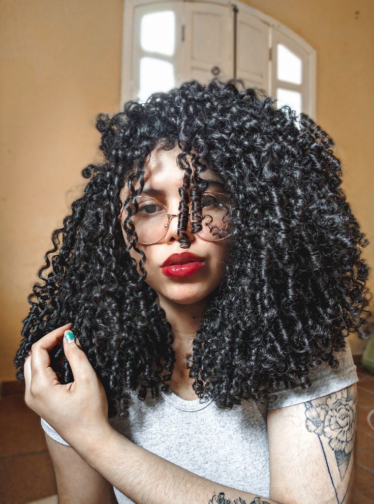
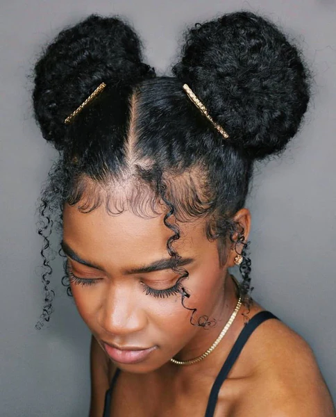
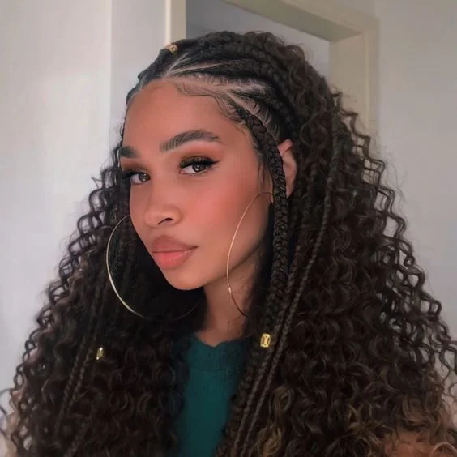

Confira as últimas tendências de penteados para cabelos crespos e ondulados, com dicas fáceis para recriar os looks em casa:
O estilo liso e polido ainda está em alta, com ênfase em fios controlados e bem tratados. Uma tendência popular é prender as seções da frente do cabelo com acessórios discretos, enquanto o restante do cabelo permanece suave e fluido
Os coques, especialmente com fios alisados ou ondulados, seguem em alta, agora com um visual mais solto e descontraído.
A tendência do rabo de cavalo com uma lateral presa ou trançada traz um toque romântico e moderno.
Cachos bem definidos, com um glamour vintage dos anos 40 e 50, voltam com força total. O segredo está no uso de cremes modeladores e difusores.
Os "space buns", ou mini coques laterais, são divertidos, enquanto os meio coques proporcionam um visual elegante e moderno.
As tranças continuam a ser um clássico, mas com toques chiques.
